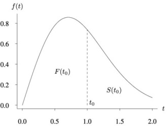

Bir müşteri bir şirketten satın alımlarını durdurmuş mudur (müşteri terki)? Şartlı tahliye edilen mahkumlar acaba tekrar suç işler mi, işlerse ne zaman işler? Bir ampul ne kadar süreli yanar, ne zaman patlar? Bu tür soruların cevabı sağkalım analizi ile verilebilir, böyle hesaplar bilinen istatistiki dağılımlar, yoğunluklar üzerinden yapılır, fakat ek bazı matematiksel bakış açılarını geliştirmek gerekir.
Pozitif sürekli bir rasgele değişken X’i düşünelim; bunu bir nesnenin ömrü olarak yorumluyoruz [1, s. 581]. X’in dağılım fonksiyonu F, yoğunluk fonksiyonu f olsun. F’nin tehlike oranı (bazen arıza oranı da denir) fonksiyonu \(\lambda(t)\) şöyle tanımlanır:
\[\lambda(t) = \frac{f(t)}{1 - F(t)}\]
İlgili bir diğer gösterim ise \(S(t) = 1 - F(t)\), yani:
\[\lambda(t) = \frac{f(t)}{S(t)}\]
\(F\) ve \(S\) tabii ki bir yoğunluk \(f(t)\)’ye göre hesaplanan alanlara tekabül ederler, alttaki grafikte görüyoruz, kümülatif dağılım \(F\)’dir, ve \(t_0\) için onun soluna düşen alandır, o zaman \(S(t_0)\) sağ eteğe doğru giden geri kalan alandır.

Tehlike oranı özünde herhangi bir dağılım için türetilebilen bir ifadedir. Belirli bir noktada olduğumuz varsayımıyla, bir olasılık yoğunluk fonksiyonunun (probability density function -pdf-) kuyruk kısmına ek bir hesaplama uyguluyoruz: \(f(t)/(1 - F(t))\). Bu, t’de bulunduğumuzdan hareketle “kalanın” gerçekleşmesi olarak yorumlanabilir (tabii x ekseni t olmak zorunda, ve pdf’nin bir ömür pdf’i olduğunu söylüyoruz).
\(f(t)\), t zamanında nüfusun (population) arıza yapma hızıdır; ancak \(f(t)\), tüm orijinal nüfusa göre ölçülür. Eğer nüfus büyük çoğunluğu t zamanında zaten ölmüşse, küçük bir \(f(t)\) değeri hayatta kalan az sayıdaki birey için muazzam bir riski temsil ediyor olabilir. \(S(t)\)’ye — yani hala hayatta olan orana — bölmek, \(f(t)\)’yi orijinal nüfus başına değil, hayatta kalan basına olacak şekilde yeniden ölçekler. Bir oran hesaplamak başka bir birim başına ölçüm verdiğinden, “kalan ömür birimi basına yoğunluk / zaman noktası” değerini soruyorum aslında; yani bu yoğunluk/zaman noktasının birim potansiyel ölüm zamanı açısından ne kadar değerli olduğunu sorguluyorum. Aynı yoğunluk değeri, az zaman kaldığında daha yüksek bir değer verir.
\(h(t) = f(t)/S(t)\) bir oran olduğundan, bir anlık hızdır (birim zaman başına), bir olasılık değildir. Bu yüzden buna yoğunluk oranı ya da ölüm kuvveti de denir; bu terimler, onun bir olasılık ya da yoğunluk yerine bir hız olduğunu daha iyi yansıtan aktüerya bilimi gibi alanlardan ödünç alınmıştır. Bir pdf’in \(f(t)\) şunu sağlaması gerektiğini biliyoruz: \(\int_0^\infty f(t)\,dt = 1\). \(h(t)\) için böyle bir beklenti yoktur.
\(S(t) = 1 - F(t)\) ile başlıyoruz; dolayısıyla \(f(t) = F'(t) = -S'(t)\). Tanıma yerleştirirsek:
\[h(t) = \frac{f(t)}{S(t)} = \frac{-S'(t)}{S(t)}\]
Logaritmanın türevi için zincir kuralını hatırlayalım:
\[\frac{d}{dt}\log S(t) = \frac{S'(t)}{S(t)}\]
O halde şunu hemen görebiliriz:
\[\frac{-S'(t)}{S(t)} = -\frac{d}{dt}\log S(t)\]
Dolayısıyla:
\[h(t) = -\frac{d}{dt}\log S(t)\]
\(S(t)\)’yi \(h(t)\)’den de elde edebiliriz. Her iki tarafı 0’dan t’ye entegre edersek:
\[\int_0^t h(u)\,du = -\log S(t) + \log S(0) = -\log S(t)\]
çünkü \(S(0) = P(T > 0) = 1\), yani \(\log S(0) = 0\). Dolayısıyla:
\[S(t) = \exp\!\left(-\int_0^t h(u)\,du\right)\]
Bu temel bir sonuçtur — yaşam fonksiyonunun tamamen tehlike fonksiyonu tarafından belirlendiğini gösterir.
Notasyonel kısaltma amacıyla
\[ H(t) = \int_{0}^{t} h(u) du \]
kullanılabilir, o zaman iki üstteki formülü şu halde de yazabiliriz [3, sf. 14],
\[ S(t) = \exp^{-H(t)} \]
T ömrünün şu parametrelerle bir Weibull dağılımı izlediğini varsayalım: - şekil parametresi \(k > 0\) - ölçek parametresi \(\lambda > 0\)
Pdf şöyledir:
\[f(t) = \frac{k}{\lambda}\left(\frac{t}{\lambda}\right)^{k-1} e^{-(t/\lambda)^k}\]
Yaşam fonksiyonunu türetelim
Tanımı gereği:
\[S(t) = P(T > t) = 1 - F(t)\]
Weibull için kümülatif dağılım:
\[F(t) = 1 - e^{-(t/\lambda)^k}\]
Dolayısıyla:
\[S(t) = e^{-(t/\lambda)^k}\]
Şimdi tanımı kullanalım:
\[h(t) = \frac{f(t)}{S(t)}\]
Yerine koyarsak:
\[h(t) = \frac{\dfrac{k}{\lambda}\left(\dfrac{t}{\lambda}\right)^{k-1} e^{-(t/\lambda)^k}}{e^{-(t/\lambda)^k}}\]
Üstelleri sadeleştirirsek:
\[h(t) = \frac{k}{\lambda}\left(\frac{t}{\lambda}\right)^{k-1}\]
Bu, tanıdık Weibull tehlike biçimidir.
Diyelim ki \(n\) tane özneyi gözlemliyoruz, bu öznelerin sağkalımsal bir dağılımı var. Sağkalım Analizi problemlerinde çok ortaya çıkan durum şudur; mesela bir grup hastaya bir deneysel ilaç veriliyor, ve ne kadar yaşadıklarına bakılıyor (kelimenin tam anlamıyla sağkalım analizi!). Vefat eden varsa bu zaman not ediliyor. Fakat deney bittikten sonra hala yaşamaya devam edenler olabilir (inşallah). Bu durumda eksik bir sinyal vardır, yani ölüm not ediliyor fakat sağkalım not edilmiyor, deney bittikten bir gün önce de olabilir, iki sene sonra da olabilir. Burada, bitiş noktası bilinmediği için bu tür veriye sağdan sansürlü (right censored) adı verilir. Sansür değişkeni literatürde \(\delta_i\) ile gösterilir, 0 ya da 1 değerine sahiptir.
İleride sansürlü veri noktalarının olurluğa nasıl etki ettiğini göreceğiz.
Tekrar üzerinden geçmek gerekirse. N hasta gözlemlediğimizi varsayalım.
Tüm hastalar 1. günde deneye alınır.
Çalışma 60 gün sürer.
Her hasta size tam olarak bir veri noktası verir: \((t_i, \delta_i)\).
Çalışmanın sonunda, her hasta için tam olarak iki şeyden biri gerçekleşmiştir:
Olay gerçekleşti: tam günü kaydettiniz → \(\delta_i = 1\)
Çalışma sona erdi (ya da hasta ayrıldı) olay gerçekleşmeden: bilinen son sağ günü kaydettiniz → \(\delta_i = 0\)
Dolayısıyla veri setiniz şöyle görünebilir:
| Hasta | \(t_i\) | \(\delta_i\) |
|---|---|---|
| 1 | 47 | 1 |
| 2 | 60 | 0 |
| 3 | 12 | 1 |
| 4 | 60 | 0 |
Hasta 2 ve 4 sağdan sansürlüdür — sırasıyla 30. ve 60. günlerde takipten çıktıklarında yalnızca hala hayattaydılar. Önemli olan şu: Olay gerçekleşsin ya da gerçekleşmesin, zaman 1. günden itibaren sürekli aktığı için her hastanın bir \(t_i\) değeri vardır.
Birazdan göreceğimiz \(L = \prod_i h(t_i)^{\delta_i} S(t_i)\) olurluğunun bunu temiz biçimde ele almasının nedeni de budur — \(\delta_i\) göstergesi yalnızca bir hastanın son kaydedilen gününün bir olay mı yoksa yalnızca bir yaşam olasılığı mı katkısında bulunacağına karar veren bir anahtar işlevi görür.
Öznelere dönersek, her birinin gözlemlenen zamanı \(t_i\) ve bir sansürleme göstergesi \(\delta_i\) var; burada \(\delta_i = 1\) olayın gözlemlendiği, \(\delta_i = 0\) ise sağdan sansürlendiği anlamında.
Her özne için şunu sormalıyız: Gerçekte gözlemlediğim şeyin olasılığı nedir?
Eğer \(\delta_i = 1\): \(t_i\)’de gerçek bir olay gözlemledik, katkı pdf \(f(t_i)\)’dir.
Eğer \(\delta_i = 0\): Yalnızca olayın \(t_i\)’ye kadar gerçekleşmediğini biliyoruz, katkı \(S(t_i)\)’dir.
Dikkat: katkı \(S(t_i)\), yani pdf grafiğini hatırlarsak “sağ kuyruktaki alan”. Sağkalım Analizi’nin sihirli numarası burada.
Tam olurluk şöyledir:
\[L = \prod_{i=1}^n f(t_i)^{\delta_i} S(t_i)^{1-\delta_i}\]
Tehlikeyle bağlantı
\(h(t) = f(t)/S(t)\) olduğundan \(f(t) = h(t)S(t)\), dolayısıyla:
\[ f(t_i)^{\delta_i} S(t_i)^{1-\delta_i} = h(t_i)^{\delta_i} S(t_i)^{\delta_i} S(t_i)^{1-\delta_i} = h(t_i)^{\delta_i} S(t_i) \]
Böylece olurluk şöyle olur:
\[L = \prod_{i=1}^n h(t_i)^{\delta_i} S(t_i)\]
\(S(t) = e^{-H(t)}\) yerine koyarsak:
\[L = \prod_{i=1}^n h(t_i)^{\delta_i} e^{-H(t_i)}\]
Bu, yaşam olurluğunun literaturdeki halidir; \(h\), \(S\), \(H\)’nin hepsi varsaydığınız dağılımdan gelir.
Weibull’u yerine koymak
Ölçek \(\lambda\) ve şekil \(k\) parametreli Weibull tehlike fonksiyonu (Weibull dağılımı değil) için:
\[h(t) = \frac{k}{\lambda}\left(\frac{t}{\lambda}\right)^{k-1}, \quad H(t) = \left(\frac{t}{\lambda}\right)^k\]
Bunları \(L\)’ye koyup log-olurluk \(\ell = \log L\)’yi alıp \(\lambda\) (ve bilinmiyorsa \(k\)) üzerinden maksimize ediyorsunuz. Sansürlü gözlemler yalnızca \(e^{-H(t_i)}\) üzerinden katkı yapar — bir olay gerçekleşmiş gibi davranmadan parametre tahminlerini doğru yönde çekerler.
Sansürlemeyi görmezden gelip gözlemlenen zamanlar üzerinde naif bir regresyon yapmak tahminleri neden çarpıtır? Çünkü sansürlü özneler için yaşam sürelerini sistematik olarak olduğundan kısa tahmin etmiş olursunuz.
Sağkalım problemleri için veri kullanarak regresyon yapmak mümkündür. Mesela bir ana dağılım seçilir, ve bu dağılımın parametrelerinin katsayıları (covariants) üzerinden değişmesine izin verilir. Eğer bu katsayılara önsel dağılım tanımlarsak, bir sonsal dağılımdan örneklem toplamak mümkündür, Monte Carlo Markov Zincirleri yaklaşımıyla (Metropolis, Gibbs) ile bir sonuca ulaşabiliriz.
Hızlandırılmış Arıza Zamanı (Accelerated Failure Time -AFT-) modelleri burada kullanılabilir. Üstteki \(\lambda\)’yi her veri noktası için \(\lambda_i\) haline çeviririz, ve onun hesabını katsayılar üzerinden yaparız,
\[\lambda_i = \lambda_0 \cdot e^{x_i^\top \beta}\]
Formüldeki \(\beta\) değişkenler / parametreler / katsayılardır, mesela yaş, eğitim, vs gibi bilgiler buradan modele dahil edilebilir, ve bu katsayılar değerlerine göre modeli “hızlandırabilir” ya da yavaşlatabilir. Bu hızlandırma / yavaşlatma muhakkak etkilenen dağılım ile alakalı olacaktır, bazı katsayı değerleri dağılımı eteklere doğru genişletebilir, zaman “yavaşlar”, ve arıza zamanı böylece daha ileri bir tarihte olabilir.
Rossi Verisi
Şimdi Rossi veri setini anlayalım ve katsayılar / ağırlıklar modelini nasıl parametrize edeceğimize karar verelim. 1970’lerde Maryland eyalet hapishanelerinden tahliye edilen 432 mahkum bir yıl boyunca takip edilmiştir. Yarısına rastgele mali yardım atanmış, diğer yarısına atanmamıştır. Sonuç değişkeni, yeniden tutuklanmayanlar için 52. haftada sansürlenerek ilk tutuklanmanın gerçekleştiği haftadır.
İlgilendiğimiz temel değişkenler şunlardır:
week — gözlemlenen zaman, hafta olarak (\(t_i\))arrest — olay göstergesi (\(\delta_i\), 1=tutuklandı, 0=sansürlü)fin — mali yardım (0/1) — ana deneysel değişkenage — tahliye sırasındaki yaşprio — önceki tutuklama sayısıwexp — önceki iş deneyimi (0/1)mar — evli (0/1)paro — koşullu tahliye (0/1)AFT Weibull Modeli
\(\lambda\)’nin katsayılara göre birey başına değişmesine izin vermemiz gerekiyor. Standart yol, Poisson regresyonuyla aynı fikir olan log-doğrusal bağlantıdır:
\[ \log \lambda_i = \beta_0 + \beta_1 \cdot \text{fin}_i + \beta_2 \cdot \text{age}_i + \beta_3 \cdot \text{prio}_i + \cdots \]
\[\lambda_i = e^{X_i\beta}\]
Bu, \(\lambda_i > 0\)’ı her zaman garanti eder. Şimdilik \(k\)’yı sabit tutuyoruz (tüm bireyler için ortak) — tek şekil, bireysel ölçekler. Bu, standart Hızlandırılmış Arıza Zamanı (AFT) Weibull modelidir.
Dolayısıyla parametre vektörünüz \(\theta = (k, \beta_0, \beta_1, \ldots, \beta_p)\) olur — bir şekil parametresi artı regresyon katsayıları. MH örnekleyici tam olarak aynı kalır, yalnızca boyut artar.
AFT’de katsayılar zaman akışını hızlandırır ya da yavaşlatır. Herkes için tek bir \(\lambda\) yerine, her mahkum \(i\) kendi efektif ölçeğini alır:
\[\lambda_i = \lambda_0 \cdot e^{x_i^\top \beta}\]
burada \(\lambda_0\) temel ölçektir, \(\beta\) katsayılardır ve \(x_i = [\text{fin}_i, \text{age}_i, \text{prio}_i, \ldots]\)’dir. Şekil \(k\) tüm bireyler için ortaktır — tüm nüfus için tehlike şeklini yönetir.
Dolayısıyla mahkum \(i\) için Weibull tehlikesi ve kümülatif tehlike şöyle olur:
\[h_i(t) = \frac{k}{\lambda_i}\left(\frac{t}{\lambda_i}\right)^{k-1}, \quad H_i(t) = \left(\frac{t}{\lambda_i}\right)^k\]
Log Sonsal
Log olurluk, artık bireysel katkıları toplayarak doğal biçimde genelleşir:
\[\log L = \sum_{i=1}^n \left[\delta_i \log h_i(t_i) - H_i(t_i)\right]\]
\[= \sum_{i=1}^n \left[\delta_i\left(\log k - k\log\lambda_i + (k-1)\log t_i\right) - \left(\frac{t_i}{\lambda_i}\right)^k\right]\]
burada \(\log\lambda_i = \log\lambda_0 + x_i^\top\beta\).
Örneklenecek parametreler
Tam parametre vektörünüz \(\theta = \{\log\lambda_0, \log k, \beta\}\)’dır. Kısıtsız pozitifliği sağlamak için \(\lambda_0\) ve \(k\) için log uzayında çalışıyoruz.
Önseller
\[\log\lambda_0 \sim \mathcal{N}(0, 10), \quad \log k \sim \mathcal{N}(0, 10)\]
\[\beta_j \sim \mathcal{N}(0, 10) \quad \forall j\]
Zayıf bilgilendirici Gaussianlar — olurluğa hakim olmayacak kadar geniş.
Metropolis Adımı
Her iterasyonda şunu öneriyorsunuz:
\[\theta^* = \theta_{\text{mevcut}} + \varepsilon, \quad \varepsilon \sim \mathcal{N}(0, \sigma^2 I)\]
ve şu olasılıkla kabul ediyorsunuz:
\[\alpha = \min\!\left(1,\, \frac{p(\theta^* \mid \text{veri})}{p(\theta_{\text{mevcut}} \mid \text{veri})}\right) = \min\!\left(1,\, e^{\log p(\theta^*) - \log p(\theta_{\text{mevcut}})}\right)\]
Öneri simetrik olduğundan (Gaussian), öneri oranı sadeleşir — bu da onu Metropolis-Hastings değil, düz Metropolis yapan şeydir.
import numpy as np
import pandas as pd
import matplotlib.pyplot as plt
df = pd.read_csv("Rossi.csv")
t = df['week'].values.astype(float)
delta = df['arrest'].values.astype(float)
fin = (df['fin'] == 'yes').astype(float).values
age = ((df['age'] - df['age'].mean()) / df['age'].std()).values
prio = ((df['prio'] - df['prio'].mean()) / df['prio'].std()).values
wexp = (df['wexp'] == 'yes').astype(float).values
mar = (df['mar'] == 'married').astype(float).values
paro = (df['paro'] == 'yes').astype(float).values
X = np.column_stack([fin, age, prio, wexp, mar, paro]) # (n, 6)
n_cov = X.shape[1]
# Son mahkumu test için ayır
t_test = t[-1]
delta_test = delta[-1]
x_test = X[-1] # test mahkumu için katsayi vektörü
t_train = t[:-1]
delta_train= delta[:-1]
X_train = X[:-1]
print(f"Test mahkumu: hafta={t_test:.0f}, tutuklandı mı={bool(delta_test)}")
print(f"Katsayilar : {dict(zip(['fin','age','prio','wexp','mar','paro'], x_test.round(3)))}\n")
# Log-Posterior (Sadece eğitim verisi ile)
def log_posterior(params):
log_lam0 = params[0]
log_k = params[1]
beta = params[2:]
k = np.exp(log_k)
log_lam_i = log_lam0 + X_train @ beta
lam_i = np.exp(log_lam_i)
# Hazard ve Birikimli Hazard fonksiyonları üzerinden log-likelihood
log_h = log_k - k * log_lam_i + (k - 1) * np.log(t_train)
H = (t_train / lam_i) ** k
ll = np.sum(delta_train * log_h - H)
# Prior (Önsel) dağılımlar - Normal(0, 100)
lp = -0.5 * (log_lam0 ** 2) / 100
lp += -0.5 * (log_k ** 2) / 100
lp += -0.5 * np.sum(beta ** 2) / 100
return ll + lp
# Metropolis Örnekleyici (Metropolis Sampler)
def metropolis(log_post, init, n_iter=50_000, step=0.08, seed=42):
rng = np.random.default_rng(seed)
n_par = len(init)
chain = np.zeros((n_iter, n_par))
current = init.copy()
log_post_curr = log_post(current)
accepted = 0
for i in range(n_iter):
proposal = current + rng.normal(0, step, size=n_par)
log_post_prop = log_post(proposal)
# Kabul/Red kriteri
if np.log(rng.uniform()) < log_post_prop - log_post_curr:
current = proposal
log_post_curr = log_post_prop
accepted += 1
chain[i] = current
print(f"Kabul oranı: {accepted / n_iter:.2%}")
return chain
# Çalıştır
init = np.zeros(2 + n_cov)
chain = metropolis(log_posterior, init, n_iter=50_000, step=0.08)
burn = 10_000
samples = chain[burn:] # (40_000, 8) - Isınma evresi sonrası örnekler
# Özet İstatistikler
names = ['log_lamtheta', 'log_k', 'beta_fin', 'beta_age', 'beta_prio', 'beta_wexp', 'beta_mar', 'beta_paro']
print(f"\n{'Parametre':<12} {'Ortalama':>8} {'Std':>8} {'2.5%':>8} {'97.5%':>8}")
print("-" * 48)
for j, name in enumerate(names):
s = samples[:, j]
print(f"{name:<12} {s.mean():>8.3f} {s.std():>8.3f} "
f"{np.percentile(s, 2.5):>8.3f} {np.percentile(s, 97.5):>8.3f}")
# Her bir sonsal örnek için test mahkumunun S(t) değerini hesapla
# log lam_test = log_lam0 + x_test @ beta
log_lam_test = samples[:, 0] + samples[:, 2:] @ x_test # (n_samples,)
lam_test = np.exp(log_lam_test) # (n_samples,)
k_test = np.exp(samples[:, 1]) # (n_samples,)
# S(t) = exp(-(t/lambda)^k), t_grid ve örnekler üzerinden yayılım (broadcasting)
# boyut: (n_samples, n_t)
S_samples = np.exp(-((t_grid[None, :] / lam_test[:, None]) ** k_test[:, None]))
S_mean = S_samples.mean(axis=0)
S_lower = np.percentile(S_samples, 2.5, axis=0)
S_upper = np.percentile(S_samples, 97.5, axis=0)
# Gerçek haftaya göre yeniden tutuklanma olasılığı
idx = np.argmin(np.abs(t_grid - t_test))
p_survive = S_mean[idx]
print(f"\nSonsal ortalama S({t_test:.0f}) = {p_survive:.3f}")
print(f"{t_test:.0f}. haftaya kadar yeniden tutuklanma olasılığı = {1 - p_survive:.3f}")Test mahkumu: hafta=52, tutuklandı mı=False
Katsayilar : {'fin': np.float64(1.0), 'age': np.float64(-0.098), 'prio': np.float64(-0.685), 'wexp': np.float64(1.0), 'mar': np.float64(0.0), 'paro': np.float64(1.0)}
Kabul oranı: 24.19%
Parametre Ortalama Std 2.5% 97.5%
------------------------------------------------
log_lamtheta 4.678 0.175 4.340 5.028
log_k 0.278 0.093 0.089 0.457
beta_fin 0.266 0.156 -0.025 0.595
beta_age 0.276 0.108 0.083 0.505
beta_prio -0.191 0.066 -0.319 -0.060
beta_wexp 0.101 0.158 -0.205 0.412
beta_mar 0.373 0.300 -0.153 0.987
beta_paro 0.069 0.155 -0.227 0.380
Sonsal ortalama S(52) = 0.825
52. haftaya kadar yeniden tutuklanma olasılığı = 0.175Veri içinden bir mahkumun verisini kenarar ayırdık ve onun tekrar suç işleyip işlemediğini tahmin etmeye çalıştık. Üstteki tahminde bu ihtimal düşük görülüyor, ve hakikaten de bu kişi yakalanmamış.
Kayıp Tahmini (Churn Prediction)
Yapay öğrenmenin en zorlu problemlerinden birine, kayıp müşteri problemine bakalım. Kayıp tahmini, endüstrideki en yaygın yapay öğrenme problemlerinden biridir [2]. Görev, müşterilerin ayrılmak üzere olup olmadığını, yani kayıp mı olacaklarını tahmin etmektir. Ne kadar karmaşık ve yamuk yollarla bu işin yapıldığını hayal edemezsiniz… Kaybettiğimiz bir müşteriyi gördüğümüzde genellikle tanısak da, bu bulanık çıkarımı işler hale / hesaplanır getirmek zor olabilir…
Kayıp “olacak” ne demek? Hepimiz bir gün ‘kayıp’ olabiliriz.
“Müşteri” ne demek? Belirli bir andaki müşteri mi? Bir abonelik planı mı? Belirli bir müşteri-id’sinin ‘kayıp vermemiş’ bir dönemi mi?..
“Kayıp” ne demek? Milyonluk soru.
[Bu noktada dehşete düşmüş] veri bilimciler çoğunlukla ‘30 gün içinde satın olmadıysa’ gibi keyfi bir çizgi çizerek tanım yapmak zorunda kalırlar. O çizginin bir tarafındakilar kayıp diğerleri sadık müşteri olarak işaretleniyor. Fakat niye 30 gün? Niye 35 gün değil? Bunun tatmin edici bir cevabı yok.
Fakat bu probleme yakından bakarsak aslında sağdan sansürlü bir sağkalım analizi problemi olduğunu görebiliyoruz. Müşteri hakkında “terk etti” diye bir bilgi veride yok. Sadece müşterinin yaptığı satın alım işlemleri var. Daha dün alım yapmış müşteri bile belki hiç tekrar alım yapmayacak, ya da benzer bir müşteri ertesi gün, ya da iki sene sonra tekrar yapacak. Bu durum aynen ilaç verilmiş hastaların ölümünün kaydedilmemiş olması ya da salınan mahkumların hepsinin tekrar suç işleyip işlemediğinin bilinmemesi durumuna benziyor, yani müşteri terki problemi de “sağdan sansürlü”.
Terk problemlerinin testi için elimizde güzel bir veri var. [5] bağlantısındaki veri, ki tekrar işlenmiş hali [4]’te bulunabilir, 01/12/2010 ve 09/12/2011 tarihleri arasında müşterileri bir elektronik ticaret sitesinde yaptığı alımları kaydetmiştir.
Biz churn.py içinde geliştirdiğimiz yaklaşımla (yine bir
AFT modelinin uygulanması), müşterilerin terk etme olasılığını
hesaplayacağız. Bu amaçla müşterinin yaptığı alımları kullanarak
onlardan bir veya birden fazla veri noktası oluşturuyoruz. Mesela eğer
müşteri siteden üç kere alım yaptıysa bu veri noktasından dört tane veri
noktası yaratıyoruz, üç tanesi alımla biten noktalar ve dördüncüsü
sağdan sansülü olan nokta. Yani bu veri için tüm müşterilerin verisi bir
anlamda sağdan sansürlü, çünkü dün alım yapmış kişinin bile tekrar gelip
gelmeyeceğini bilmiyoruz.
Bir soru akla gelebilir, bir alımdan dört nokta çıkartıyorsak, ve bunları regresyona Weibull katsayıları olarak veriyorsak, bu regresyonda gereksiz tekrarı ortaya çıkartmaz mı? Mesela bir müşteri üç alım yapmış, onun yaş, eğitim durumu, zip kodu birinci noktaya katsayı oluyor, sonra aynı yaş, eğitim durumu, zip kodu ikinci noktaya katsayı oluyor, vs, sürekli bir tekrar durumu var, regresyon mantığının sinyal yakalamasını zorlaştırmış olmuyor muyuz? Evet eğer müşterinin tüm veri noktalarında tekrar eden veriler kullanırsak hakikaten problem ortaya çıkabilir. İşte bu sebeple alttaki yaklaşımda aynı müşteri olsa bile onun her alımında farklı olacak değerleri regresyonda vermeye dikkat ettik.
Değisen veriler ne olabilir, mesela eğer müşterinin o ana kadar yapmış olduğu alımların kumulatif toplamını bir katsayı yaparsak, bu veri her alımda farklıdır. İlk alimda 500 liralım alım varsa, ikinci 300 liralık alım sonrası kumulatif toplam 800 olacaktır.. Ayrıca alım miktarının kendisi de bir katsayı olabilir. Alımın indisi önemli bir sinyal olabilir, birinci alım mı, ikinci alım mı, vs.
Kullanılan tüm değişkenler alttadır:
| Değişken | Açıklama |
|---|---|
| intercept | Sabit terim. Tüm diğer değişkenler sıfır olduğunda baz satın alma aralığını belirler. |
| prev_gap | Bir önceki satın alma aralığı (gün). Müşterinin geçmiş ritmi hakkında bilgi verir. |
| log_purchase_idx | Satın alma sırasının logaritması — \(\log(k+1)\). Müşteri sadakati ve alışkanlık etkisini ölçer |
| spend | Mevcut faturadaki harcama miktarı. O andaki müşteri ilgisini yansıtır. |
| cum_spend | O ana kadar yapılan toplam harcama. Müşterinin uzun vadeli değerini ve birikimli ilişkisini temsil eder. |
| n_items | Mevcut faturadaki farklı ürün sayısı. Sepet çeşitliliğini ve ilgiyi ölçer. |
| days_since_first | İlk satın alma tarihinden bu yana geçen gün sayısı. Müşteri yaşını (tenure) temsil eder. |
| log_sigma | AFT modelinin ölçek parametresinin logaritması — \(\log(\sigma)\). Satın alma aralıklarındaki açıklanamayan değişkenliği ölçer; doğrudan bir katsayı değildir. |
import churn
results = churn.main("/opt/Downloads/Online Retail.csv")Loading data...
Date range : 2010-12-01 -> 2011-12-09
Cutoff : 2011-10-01
Building episodes...
Total episodes : 16486
split delta
test 0 2467
1 2180
train 0 3616
1 8223
Standardising covariates...
Initial log-posterior: -43082.18
Acceptance rate: 0.269 (target ~0.23)
Posterior summary
param mean sd q025 q50 q975
intercept 3.8732 0.0130 3.8475 3.8734 3.8976
prev_gap 0.0060 0.0182 -0.0293 0.0058 0.0423
log_purchase_idx -1.2931 0.0240 -1.3407 -1.2937 -1.2467
spend -0.0367 0.0134 -0.0625 -0.0367 -0.0105
cum_spend 0.0443 0.0151 0.0139 0.0443 0.0745
n_items -0.0506 0.0134 -0.0784 -0.0503 -0.0256
days_since_first 0.5682 0.0260 0.5169 0.5681 0.6193
log_sigma 0.2288 0.0084 0.2128 0.2287 0.2451
C-index (test set): 0.7394
Brier score (W=90d, n=4647): 0.1927C-index yüksek gözüküyor, regresyon başarılı oldu demektir.
Katsayılara bakarsak sonuçlarının çok rahat yorumlanabilir olduğunu görüyoruz.
log_purchase_idx = -1.29, açık ara en güçlü sinyal.
Katsayılar standartlaştırıldığı için birbirleriyle doğrudan
karşılaştırılabilir. Daha fazla satın alma -> daha kısa sonraki
aralık -> sadık müşteriler daha hızlı geri döner. Bu, alışkanlık
(habituation) etkisi.
days_since_first = +0.57, ikinci en güçlü değişken ve
işareti pozitif - müşteri ne kadar uzun süredir varsa, bir sonraki satın
alma aralığı o kadar uzar. İlk bakışta sezgiye aykırı
gelebilir; ancak bu muhtemelen uzun soluklu bir ilişkide sadık
müşterilerde bile gözlemlenen doğal soğuma etkisini yakalamaktadır.
cum_spend = +0.044 ile spend = -0.037
arasında ilginç bir gerilim var. Mevcut faturadaki yüksek harcama bir
sonraki aralığı kısaltır (ilgili müşteri), buna karşın yüksek birikimli
harcama aralığı uzatır. Birikimli etki, “ihtiyacını karşılamış”
müşterinin bir göstergesi olabilir.
prev_gap = +0.006, diğer değişkenler kontrol edildiğinde
geniş güven aralıklarıyla birlikte pratikte sıfıra eşdeğerdir - satın
alma aralıkları arasında anlamlı bir kendisiyle korelasyon
bulunmamaktadır.
log_sigma = 0.229, \(\sigma =
e^{0.229} \approx 1.26\) anlamına gelir. Bu oldukça geniş bir
log-normal dağılıma işaret eder - satın alma aralıklarında model
tarafından açıklanamayan önemli bir heterojenlik mevcuttur; bu da
perakende verisi için beklenen bir sonuçtur.
Kapatmadan önce üstteki kodun test etme stratejisine de değinelim; veri içine düşen bir tarih seçtik, ve bu tarihin bir tarafına düşen verileri eğitim için diğerlerini test için ayırdık, tabii ki sağdan sansür kavramı da bu kesim (çutoff) noktasına göre ayarlandı. Yani hesapladığımız test sonuçları regresyonun bakmadığı ve bilgisinin olmadığı veriler üzerinden gerçekleştirilmiştir.
Kodlar
Kaynaklar
[1] Ross, Introduction to Probability and Statistics for Engineers and Scientists
[2] Egil Martinsson, WTTE-RNN - Less hacky churn prediction
[3] Box-Steffensmeier, Event History Modeling